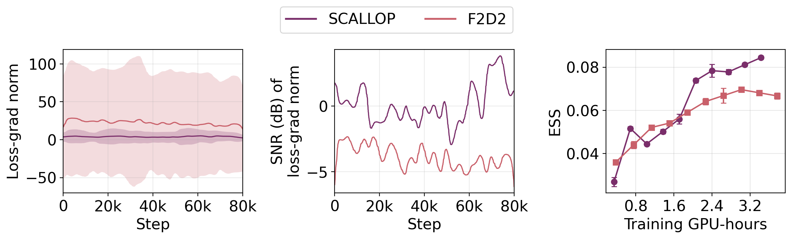
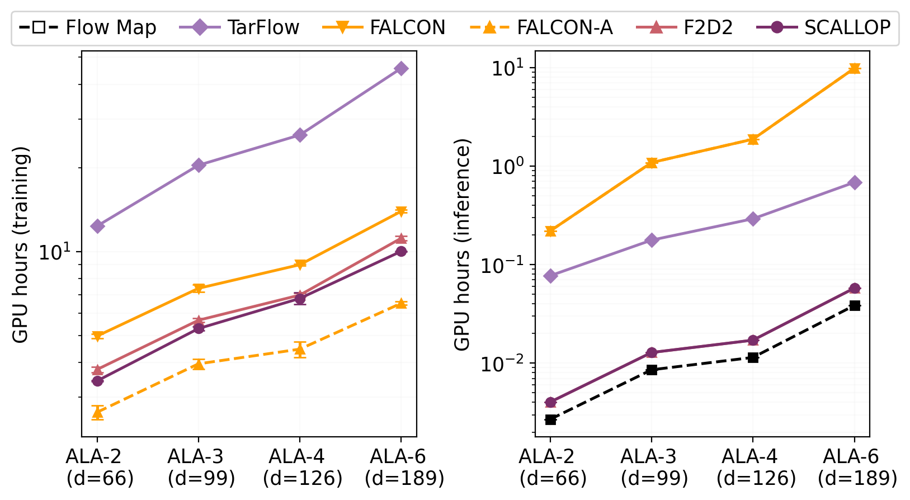

Results
Faster likelihood evaluation. More stable training.
On alanine systems, SCALLOP improves on F2D2 across all reported metrics and achieves competitive performance with state-of-the-art Boltzmann generators.
Molecular sampling
Full results from the paper’s molecular benchmark, evaluated using self-normalized importance sampling. Values are mean ± standard deviation over three random seeds with 200,000 samples. Bold marks the best result; underlining marks the second best.
| System | Metric | SBG-IS | FALCON | FALCON-A | F2D2 | SCALLOP |
|---|---|---|---|---|---|---|
| ALA-2d = 66 | ESS ↑ | 0.030 ± 0.012 | 0.067 ± 0.013 | 0.097 ± 0.007 | 0.066 ± 0.001 | 0.088 ± 0.001 |
| ℰ-W2 ↓ | 0.873 ± 0.338 | 0.225 ± 0.104 | 0.512 ± 0.038 | 0.958 ± 0.114 | 0.555 ± 0.116 | |
| 𝕋-W2 ↓ | 0.439 ± 0.129 | 0.402 ± 0.021 | 0.180 ± 0.005 | 0.383 ± 0.022 | 0.310 ± 0.027 | |
| NFE | 1 | 4 | 4 | 4 | 4 | |
| ALA-3d = 99 | ESS ↑ | 0.052 ± 0.013 | 0.077 ± 0.004 | 0.104 ± 0.004 | 0.079 ± 0.001 | 0.088 ± 0.001 |
| ℰ-W2 ↓ | 0.758 ± 0.506 | 0.544 ± 0.013 | 1.385 ± 0.182 | 2.155 ± 0.033 | 1.596 ± 0.028 | |
| 𝕋-W2 ↓ | 0.502 ± 0.016 | 0.452 ± 0.011 | 0.343 ± 0.004 | 0.219 ± 0.001 | 0.212 ± 0.001 | |
| NFE | 1 | 8 | 8 | 8 | 8 | |
| ALA-4d = 126 | ESS ↑ | 0.046 ± 0.014 | 0.055 ± 0.003 | 0.094 ± 0.007 | 0.053 ± 0.001 | 0.067 ± 0.001 |
| ℰ-W2 ↓ | 1.068 ± 0.495 | 0.686 ± 0.047 | 2.929 ± 0.068 | 4.209 ± 0.066 | 1.545 ± 0.033 | |
| 𝕋-W2 ↓ | 0.969 ± 0.067 | 0.858 ± 0.077 | 1.094 ± 0.034 | 1.435 ± 0.023 | 1.399 ± 0.039 | |
| NFE | 1 | 8 | 8 | 8 | 8 | |
| ALA-6d = 189 | ESS ↑ | 0.034 ± 0.015 | 0.060 ± 0.017 | 0.077 ± 0.007 | 0.033 ± 0.001 | 0.042 ± 0.001 |
| ℰ-W2 ↓ | 1.021 ± 0.239 | 0.892 ± 0.311 | 1.211 ± 0.105 | 10.140 ± 0.065 | 5.845 ± 0.101 | |
| 𝕋-W2 ↓ | 1.431 ± 0.085 | 1.256 ± 0.132 | 1.163 ± 0.112 | 1.143 ± 0.039 | 1.120 ± 0.014 | |
| NFE | 1 | 16 | 16 | 16 | 16 |
ESS is the effective sample size (higher is better); ℰ-W2 and 𝕋-W2 are the 2-Wasserstein distances for energy and torsional-angle distributions (lower is better). NFE is the number of function evaluations. The SBG-IS normalizing-flow baseline comes from SBG (Tan et al.). SBG-IS, FALCON, and FALCON-A values are taken from FALCON (Rehman et al.), as in the paper.
Training stability and efficiency

Sampling and density evaluation are up to 10× faster than the normalizing-flow baseline from SBG and 100× faster than FALCON.

Beyond molecules: CelebA-64
The same objective improves per-sample likelihood accuracy on image data. SCALLOP consistently reduces the mean absolute error in bits per dimension (BPD) relative to a 1,024-step teacher, while retaining competitive sample quality.
| Steps | Flow map | F2D2 | SCALLOP | |||||||||
|---|---|---|---|---|---|---|---|---|---|---|---|---|
| NLL | |Δ| ↓ | Err ↓ | FID ↓ | NLL | |Δ| ↓ | Err ↓ | FID ↓ | NLL | |Δ| ↓ | Err ↓ | FID ↓ | |
| 1 | -69.83 | 71.58 | 71.64 | 12.96 | 1.64 | 0.11 | 0.53 | 6.94 | 1.60 | 0.15 | 0.17 | 6.91 |
| 2 | -32.72 | 34.47 | 34.46 | 6.32 | 1.73 | 0.02 | 0.33 | 3.86 | 1.69 | 0.06 | 0.12 | 3.81 |
| 4 | -14.89 | 16.64 | 16.59 | 4.04 | 1.75 | 0.00 | 0.24 | 2.75 | 1.75 | 0.00 | 0.12 | 2.70 |
| 8 | -6.78 | 8.53 | 8.45 | 3.33 | 1.64 | 0.11 | 0.18 | 2.41 | 1.68 | 0.07 | 0.10 | 2.37 |
All models use Lagrangian self-distillation (LSD). NLL is measured in bits per dimension (BPD); |Δ| is its absolute deviation from the reference BPD; Err is the mean absolute per-sample BPD error against the teacher. The reference flow-matching model achieves BPD 1.75 with 1,024 Euler steps and FID 2.48 with 200 Euler steps. Best results are bold. On CelebA-64, SCALLOP’s loss computation takes 83.1% of F2D2’s wall-clock time.